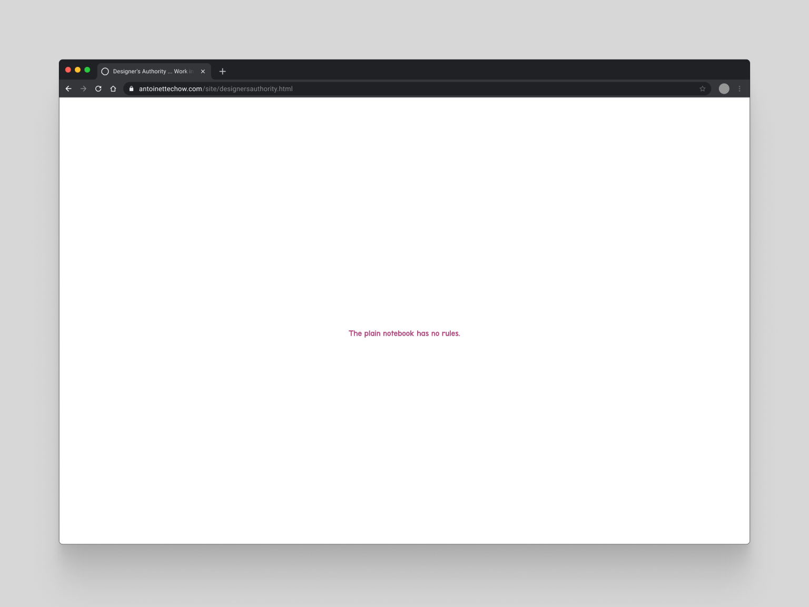
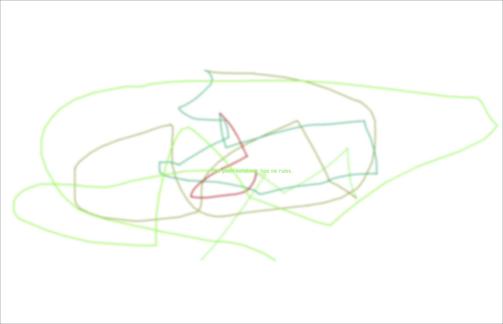

The inspiration behind the design of this website came from a writing workshop at a design school. Combining a few exercises of writing and designing, it helped me with finding my voice as a designer, a creator, putting ideas into words and eventually translating them into this piece of work that sits along with the rest of all my works.
Enter site

Through multiple writing exercises, I was able to put into words my approach and process in design.

The idea of chaotic exploration and creating order within, which will eventually lead to the final outcome unfolding itself from the process. As visitors interact with the page, they unknowingly create a unique piece of drawing behind that will be revealed at the end.